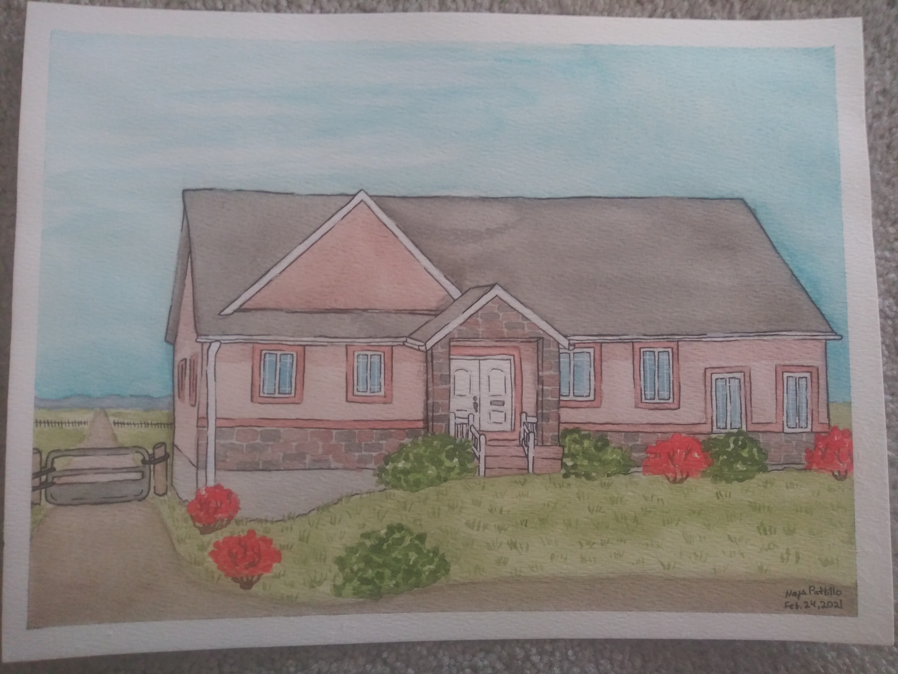
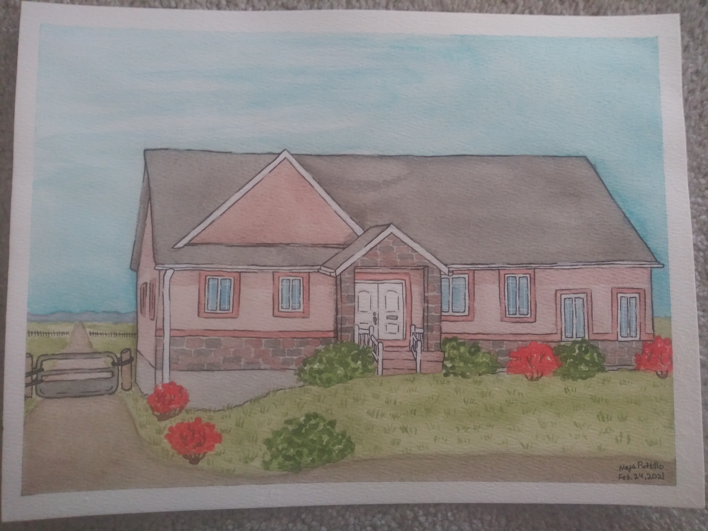

Because of its fluidity, Watercolor is not a medium to be totally controlled and manipulated, which of course is the very beauty of its quality. With soft colors and lines, certain colors can cause different affects with other colors when placed down. The fluidity of this medium allows many things to happen on dry and wet surfaces.

 
